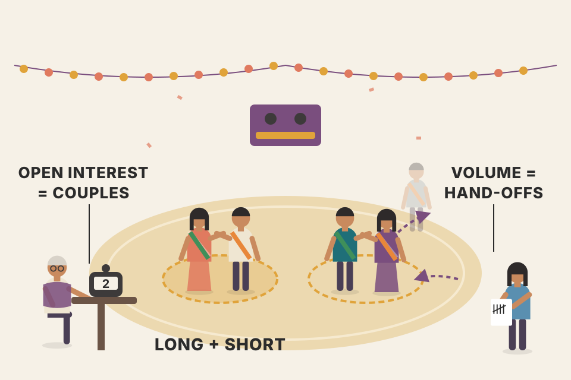
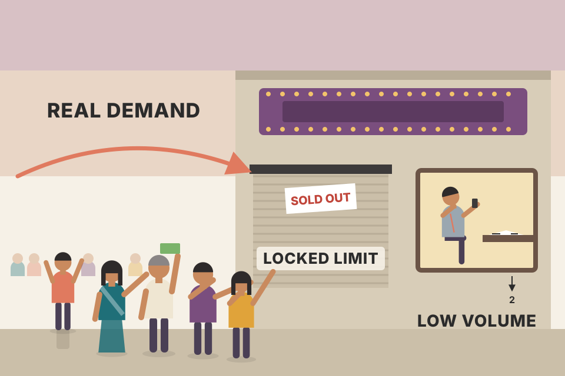
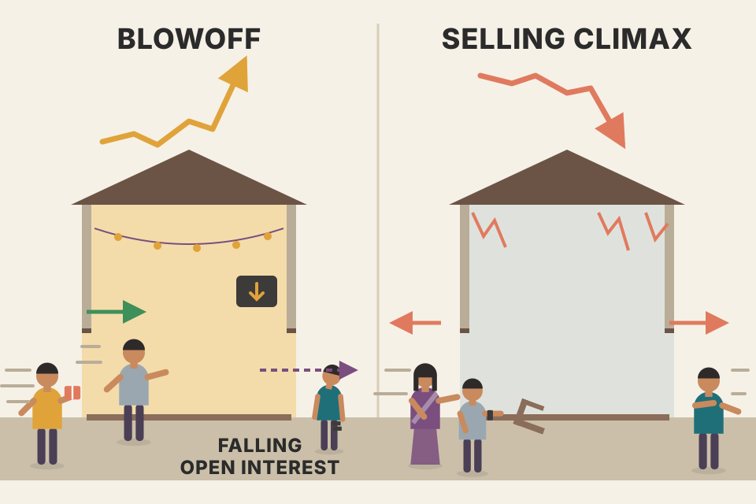

Price tells you where the market went. Volume tells you how hard it was pushed. Open interest tells you whether new money is joining the fight or leaving it. This page walks through the whole chapter in the book's order, in plain words, with a live chart or a working model for each idea. Every chart uses a simulated market built to show one idea clearly, not real prices. Roll a new market to check which conclusions survive.
Murphy's chain of ideas. Price comes first; volume and open interest are there to confirm it or warn that it can't be trusted.
Most technicians look at a market through three sets of numbers: price, volume and open interest. Volume analysis works in every market. Open interest applies mainly to futures.
Chapter 3 showed how all three are drawn on a daily bar chart. It also made one point that matters here: in futures, volume and open interest exist for each delivery month, but forecasters use the total figures across all months. Stock chartists simply plot total volume under the price. Up to now the book has been almost all about price. This chapter fills in the other two dimensions.
A car's dashboard. The speedometer (price) is what you steer by. The rev counter (volume) shows how hard the engine is working to hold that speed. The fuel gauge (open interest) shows how much is in the tank for the trip ahead. A car doing 100 at low revs on a full tank is in a different state from one doing 100 at the red line on fumes.
Simulated, and the roll model is mine (not in the book). Each delivery month expires every 21 trading days. In the last 6 days before expiry, traders who want to stay in close the expiring month and open the next one. Underneath, total participation follows one smooth path that I set.
A single delivery month has a life cycle: its open interest builds while it is the main contract, then drains to zero as it nears expiry, because every holder must close or roll. Rolling is one closing trade in the old month and one opening trade in the new month, so the total barely moves. If you read the OI rules (section 12) off one month, every expiry looks like "open interest collapsing", a warning that has nothing to do with the market. Adding all months cancels the roll and leaves only real arrivals and departures. That's the reason behind summary rule 2 (section 14). The same goes for volume: in the roll window much of the trading is the roll itself.
Index and stock futures on NSE have several live expiries at once, and positions roll at every monthly expiry. Before you apply section 12's classifier, add open interest across all live expiries (your data vendor may already offer a combined or "continuous" OI figure; check how it is built). A continuous front-month price chart is fine for price; a front-month-only OI series is the trap shown above.
Get the order right: price matters most. Volume and open interest come second and are used mainly to confirm what price is doing. Of those two, volume is the more important.
Volume is how many units (shares, contracts) changed hands in the period. On a daily chart, each day's volume is a vertical bar under that day's price bar. On a weekly chart you plot the week's total volume under the weekly bar. Volume is usually not used on monthly charts.
Volume is the noise of the crowd at a cricket match. The scoreboard (price) is what counts, but a roar when the ball goes for six tells you how many people believe in the shot. A big score in an empty stadium is less convincing.
This market was built so the rallies (shaded) trade more heavily than the pauses, like Murphy's Figure 7.1 (Black & Decker), where the volume bars grew noticeably as prices rallied: volume confirming the rise, which is bullish. Switch to weekly: each bar is five days, and its volume bar is the sum of those five days, so the weekly chart keeps the same message with less clutter.
intraday_swing_playbook.md enters a 50-day-high breakout only on volume above 1.5 × the 20-day average. That's this idea turned into a rule; section 06 runs it on the page, trade by trade, with a pooled simulation.Open interest is the total number of contracts still outstanding (not yet closed out) at the end of the day. On Murphy's charts it's a solid line under the price bars and above the volume bars (Figure 7.2).

A dance floor where everyone must dance in pairs, one long and one short. Open interest counts the couples on the floor, not the people. Volume counts how many times a dance changed hands today.
My numbers. A futures market in a steady rise. Each evening you update the chart with that day's price, but the official volume and open interest you can add are the previous day's.
| Evening of | Price you plot | Official OI you can plot | Reported change | What the change says |
|---|---|---|---|---|
| Mon | 1,012 (Mon) | 48,200 (Fri) | +0 | no net new positions on Friday |
| Tue | 1,019 (Tue) | 49,050 (Mon) | +850 | 850 more contracts opened than closed on Monday: new longs and new shorts |
| Wed | 1,027 (Wed) | 50,300 (Tue) | +1,250 | more fresh money on Tuesday while price rose: section 12's rule 1 |
| Thu | 1,031 (Thu) | 49,900 (Wed) | −400 | a single small dip on Wednesday: don't over-read one day (section 13, point 4) |
Two things to notice. On Thursday evening the newest open interest you have is Wednesday's, so any OI signal reaches you a day after the price action it explains. And the useful part is the change column, not the level: 49,900 by itself says nothing, while +850, +1,250, −400 tells you who was arriving and leaving. Over the three reported days OI is up 1,700 (+3.5%) with price up, which is the picture to trust.
Murphy wrote about US futures in the late 1990s. Your order_flow.md lists NSE F&O open interest as a data source. Before you apply the one-day-lag remark, check whether your own feed shows OI live, end-of-day, or with a delay.
Every completed trade changes open interest in one of three ways: up, down, or not at all. It depends on whether each side is opening a new position or closing an old one. Murphy lists the four combinations:
The short version: both opening = up; both closing = down; one in and one out = no change. By watching the net change in total open interest at the end of each day, the chartist can tell whether money is flowing into or out of the market. That says something about how strong or weak the current trend is.
Volume goes up by one on every button press, because every trade is volume. Open interest only moves when a couple joins or leaves the floor. That's why the two numbers tell different stories: heavy volume with flat open interest is mostly people swapping seats; rising open interest is new commitment from both sides.
order_flow.md (section 4) reads NSE futures with the same logic: price ↑ OI ↑ long build-up, price ↓ OI ↑ short build-up, price ↑ OI ↓ short covering, price ↓ OI ↓ long unwinding. Section 12 below shows these are Murphy's four OI rules.Futures technicians usually combine the volume and open interest rules because they're so alike. Murphy states the shared rules first, then treats each one separately, then combines them again at the end (section 14). His general table pairs the price direction with volume and open interest moving together. Pick a cell:
Read "Strong" and "Weak" as describing the market (bullish or bearish), not how forceful the current move is. Murphy's own wording is the clearest way to remember it: if volume and open interest are both rising, the current trend will probably continue, up or down. If both are falling, treat it as a warning that the trend may be nearing its end. So a falling market with rising volume and OI is a confident downtrend (bearish, "Weak"), and a falling market with shrinking volume and OI is a downtrend running out of fuel ("Strong").
A procession walking up a hill. If more people keep joining (rising volume and OI), it keeps going. If people keep dropping out (falling volume and OI), it will stop soon, whichever way it's walking.
Rising open interest means both sides are opening new positions: fresh money is fighting over the move, and the side the trend favours keeps winning. Falling open interest means people are closing positions. In an uptrend, that's shorts covering; in a downtrend, it's longs giving up. Either way, the move is being powered by exits, and exits run out. Murphy's Figure 7.2 (crude oil) shows the bearish case: open interest climbing while prices fell.
The book's table only covers volume and OI moving the same way. It doesn't give a verdict when they disagree, so neither does this page.
My numbers, not the book's. Each row compares one week with the week before: price change, average daily volume, and total open interest at the week's end.
| Week | Price | Avg volume | Total OI | Cell | Reading |
|---|---|---|---|---|---|
| 1 | +3.1% | 42k → 51k (+21%) | 80,000 → 84,500 (+5.6%) | price up, both rising | Strong: new buyers and sellers keep arriving, and the buyers keep winning |
| 2 | +1.4% | 51k → 38k (−25%) | 84,500 → 81,200 (−3.9%) | price up, both falling | Weak: the rise is being made by people leaving; a warning, not yet a reversal |
| 3 | −2.6% | 38k → 49k (+29%) | 81,200 → 86,000 (+5.9%) | price down, both rising | Weak (bearish): new shorts are pressing the fall |
| 4 | −1.1% | 49k → 35k (−29%) | 86,000 → 82,300 (−4.3%) | price down, both falling | Strong (bullish): the fall is running on exits, and exits run out |
Two habits make this usable. First, compare against a recent average or a week ago, never a single day: one quiet day doesn't change a cell. Second, the cell is a context for a price signal, not a signal on its own: week 2 says "don't trust this rally as much", it doesn't say "sell".
The level of volume measures the intensity or urgency behind a price move. Heavier volume means more pressure. Watching volume with price lets you judge the buying or selling pressure, and so either confirm a move or be warned that it can't be trusted.
Murphy's rule: volume should expand in the direction of the existing trend. In an uptrend, volume should be heavier on the rallies and lighter on the dips. While that pattern holds, volume is confirming the trend. Figure 7.3: McDonald's broke above its November 1997 peak on a noticeable burst of volume (bullish). Figure 7.4: Intel's volume was heavier on the rises, dropped off as prices weakened, and burst higher during a final three-day jump.
Watch for divergence: if price breaks above a previous high on declining volume, buying pressure is fading. If volume also starts to pick up on the dips, the uptrend may be in trouble.
Pushing a car uphill. When the pushers shove hardest on the way up and rest on the flat bits, the car keeps climbing. When the car crawls to a new high with fewer people pushing, and more people tug it backwards on every dip, it's about to roll back.
Green bars are up days, red bars are down days. In the left shaded zone, up days average much more volume than down days: the readout ratio is well above 1. In the right zone, price still makes a new high, but the ratio drops below 1: down days now carry more volume. That flip is the divergence Murphy describes. The simulation is built to show it, so this is a picture of the rule, not proof that it works.
(My numbers.) The last 20 days traded 1,10,000 shares a day on average. Today the stock closes above its earlier high on 2,05,000 shares: 2,05,000 ÷ 1,10,000 = 1.86× its average. That's the "noticeable burst" of Figure 7.3 written as a number. A close above the high on 80,000 shares (0.73×) is the "new high on declining volume" warning. Dividing by a recent average is what lets one threshold work across quiet and busy stocks.
Your swing setup S-1 in intraday_swing_playbook.md turns "a breakout should come on heavier volume" into exact rules. Here they are as code runs them on this page (beyond the book). I dropped S-1's two market filters (stock within ~5% of its 52-week high, Nifty above its 200-day average) because a single simulated market has neither.
backtest_results_summary.md) made 13–18%/yr but no better than holding the same stocks; the note doesn't say whether the volume filter was on.Chapters 5 and 6 kept using volume to confirm price patterns. Murphy collects those points here:
Figure 7.5 (Compaq): the first half shows an uptrend with heavier volume on up days; a boxed area shows a sudden drop on heavy volume (a bad sign); and trading picks up as a continuation triangle breaks to the downside.
Each pattern here is drawn through fixed turning points, and its volume follows Murphy's description by construction. The readout prints the average volume on each leg, so you can check the textbook signature: for example, the head leg is lighter than the left-shoulder leg, and the breakout leg is the heaviest.
order_flow.md says the same about breakouts: take one only if relative volume is high and delta agrees, otherwise suspect a fake.Price and volume are two different gauges of the same thing: pressure. If prices are trending higher, there's more buying pressure than selling pressure, so the heavier volume should be on the side of the trend. Technicians say volume precedes price: a loss of upside pressure in an uptrend (or downside pressure in a downtrend) shows up in the volume figures before the price trend reverses.
Throw a ball upward. It's still rising after your hand lets go, but the force behind it is already gone. The bottom line in this chart is the hand; the price is the ball.
The bottom line (not in the book; my illustration) is the last 20 days' up-day volume minus down-day volume, a simple "net pressure" gauge. It peaks during the first rally, long before price makes its final high. The next section's OBV measures the same thing as a running total instead of a 20-day window.
My numbers, and a 5-day window instead of 20 so the arithmetic fits on one line. Net pressure = volume on up days − volume on down days.
| Window | Close at end | Up-day volumes | Down-day volumes | Net pressure |
|---|---|---|---|---|
| early rally | 118 | 120k + 140k + 130k = 390k | 70k + 60k = 130k | +260k |
| later rally | 124 | 80k + 75k + 90k = 245k | 110k + 95k = 205k | +40k |
Price is higher in the second window (124 against 118) and up days still outnumber down days three to two, so a price-only reader sees a healthy uptrend. The volume says the push behind it has fallen from +260k to +40k: buyers still win, but by much less, and the down days now carry heavy volume. That is "volume precedes price": the change shows up here first, and price follows if it continues. It is a warning, not a timing signal; the pressure can recover.
Eyeballing volume bars isn't always precise enough to catch a real shift in volume flow, so technicians built volume indicators. The simplest and best known is on balance volume (OBV), developed and popularised by Joseph Granville in his 1963 book Granville's New Key to Stock Market Profits. OBV draws a curving line that either confirms the quality of the price trend or warns of a reversal by diverging from price.
Construction is simple. Each day's total volume gets a plus sign if the close was higher than the day before, and a minus sign if it was lower. Keep a running total.
The direction of the OBV line is what matters, not its value. The number depends on how far back you started counting, so let the computer do the arithmetic and watch the trend. OBV should move with price: higher peaks and higher troughs in price should be matched by OBV, and a falling price by a falling OBV. When OBV fails to follow price, there's a divergence, a warning of a possible reversal. In Figure 7.6 (Compaq), OBV replaced the volume bars and made the October 1997 downturn much easier to see.
OBV is a bank balance. Every up day deposits that day's volume; every down day withdraws it. If the price keeps making new highs but the balance is lower than it was at the last high, the rally is being bought on credit.
The second price peak is higher than the first, but OBV at the second peak is lower: the climb was made on light up-day volume while the dips were heavy. That's a bearish divergence, the same picture as Murphy's Intel chart in the next section (Figure 7.7).
order_flow.md describes cumulative delta (CVD) and the "price makes a new high, CVD doesn't" divergence. CVD is a running total of aggressive buy minus sell volume, so it's OBV's idea with a finer split of each day's volume.OBV works reasonably well, but it has a flaw: it gives a whole day's volume a plus or a minus. If the market closes up by just one or two ticks, should all that volume count as buying? If the market spends most of the day higher but closes slightly lower, should all the volume count as selling? Technicians have tried many variations to find the "true" upside and downside volume:
All of these have the same goal: is the heavier volume on the upside (bullish) or the downside (bearish)? Despite its simplicity, OBV still does a pretty good job in futures and stocks, it's on most charting software, and many packages let you draw it right over the price bars for easier comparison. Figure 7.7: a bearish divergence between OBV and Intel's price correctly warned of a major fall. Figure 7.8: OBV overlaid on McDonald's price led prices higher and warned in advance of a bullish breakout.
An example (mine, not the book's): a stock closes up ₹0.05 on 50 lakh shares. OBV adds the full 50 lakh. The price-weighted version adds 50 lakh × 0.05 = 2.5 lakh "rupee-shares", almost nothing next to a day that moved ₹5. In the chart the three lines usually agree on the big swings and disagree on the quiet days.
order_flow.md: volume × ((C − L) − (H − C)) ÷ (H − L). A close near the day's high counts mostly as buying, a close near the low mostly as selling. It answers Murphy's "up most of the day but closed slightly lower" question.Even with these limits, Murphy says volume analysis still works in futures, and a futures trader should keep a close eye on it.

A concert sells out and the box office shuts. Ticket sales that day were low, not because nobody wanted to go but because there was nothing left to sell. Low volume at a locked limit is the same: the queue outside is the real signal, and the volume number can't see it.
A simple model of my own (not in the book): once price hits the limit it can't go higher, so the only trades are buyers matched with whoever is willing to sell at the limit price. Volume is the smaller of the two queues.
Volume only counts trades that happened. At a locked limit, the buyers who couldn't get filled leave no trace in volume. So the traditional reading (light volume on an up day = weak) gets the sign wrong: the lighter the volume while buy orders pile up, the stronger the market. OBV makes the same mistake in a quieter way: it adds only the small matched volume, so a very strong day moves the line less than an ordinary up day. Push the sellers slider above the buyers: now everyone who wants to buy gets filled, the limit is no longer "locked", and normal volume reading works again.
Many Indian cash-market stocks have daily price bands (circuit limits); the exact rules differ by stock and change over time, so check the exchange's current rules. A stock stuck at its upper circuit can show the same effect: trades happen only at the limit price with buy orders queued up, so volume may look small on a very strong day. Read low volume at a price limit as "few sellers", not necessarily "no interest".
Open interest rules are like the volume rules, but they need more explanation, because they tell you who is driving the move:
Compressed: in an uptrend, OI up → bullish and OI down → bearish; in a downtrend it's the reverse.
Rising OI is new players walking onto the field. Falling OI is players walking off. A move made by people walking on (new positions) has fuel left; a move made by people walking off (covering or liquidating) ends when the last of them has left.
My numbers, not the book's. Each row is a week's trading split into section 04's four kinds of trade. Weeks rather than days, because Murphy warns against reading too much into very short-term open interest changes.
Every trade has one buyer and one seller, and section 04 says who they are. The buyers are either new longs (in "both open" and "long hand-off" trades) or old shorts buying back (in "short hand-off" and "both close" trades). The sellers are either new shorts or old longs getting out. Count contracts and two identities fall out:
So "price up, OI down" means that, over the period, more shorts bought back than new shorts sold, and more old longs left than new longs came in. The rise happened while the total number of positions shrank, so it was paid for by people leaving. That's rule 2's "short covering": once the losing shorts are out, that source of buying is gone. Rule 4 is the mirror image: in a fall with OI dropping, old longs are selling out faster than new shorts arrive, and that selling also runs out. Rules 1 and 3 are the opposite case: both sides are adding positions, so the side that's winning has fresh money behind it.
The 5-day window and the 2% "flat" band are my choices, not Murphy's. The state names are the ones in your order_flow.md; the verdicts are Murphy's. A state describes who is trading, not when to enter: use it as a filter on a setup that already has an edge.
order_flow.md names these exact four states for NSE futures: long build-up = rule 1, short covering = rule 2, short build-up = rule 3, long unwinding = rule 4. The note only names the states; the bullish/bearish verdicts are Murphy's. His rules are phrased in terms of the trend, and he warns against reading too much into very short-term OI changes (pdf p211). Note that he reads short covering in a rally as bearish and long unwinding in a decline as bullish.The bars underneath are the contracts opened on each range day; together they add up to exactly 10,000. Each day's new shorts sold at that day's price. Bars turn red once their price is below today's price (their shorts are losing). Drag the slider: by the time price clears the top of the range, every short opened inside it is underwater. That's pure arithmetic, not a forecast. Murphy's point is what those losing traders then have to do: buy back, which pushes the price further.
order_flow.md footprint puzzle: buyers absorbed near a high are now losing, and their stop-losses add selling if the low breaks.Treat the ten rules as tests run against a price signal. Price is the code you're shipping; volume and open interest are the test suite. Passing tests (rules 3, 9, 10) let you ship with more confidence. Failing ones (rules 4, 7, 8) don't rewrite the code; they tell you not to trust it as much. And rules 1–2 are the test setup: run the right tests (OI only where it exists) on the right data (totals, not single months).
One last situation: the dramatic action that often marks tops and bottoms. Blowoffs happen at major tops; selling climaxes at bottoms.

A blowoff is the last guests rushing into a party just as it ends: the crowd surges, but the people already inside are slipping out the back (falling OI). A selling climax is a stampede for the exit: everyone who wanted out gets out in one burst, and then there's no one left to sell.
During the blowoff rally, volume jumps but OI falls. Murphy only states that fact; the reading that follows is mine. Falling OI means positions are being closed, so the rise is fuelled by shorts covering and longs taking profits rather than by new commitments, which looks like rule 2 in section 12 in an extreme form. In the climax, the volume spike can be read as the last forced sellers being cleared out.
My numbers, not the book's. Two strong rallies in the same futures market, each measured over its last 15 days against the 90 days before it.
| Rally | Price | Volume vs earlier average | Open interest | Reading |
|---|---|---|---|---|
| A: mid-trend breakout | 131 → 147 (+12%) | 1.6× | 58,000 → 61,500 (+6%) | volume and OI both rising with price: rule 1, new money joining |
| B: after a long advance | 147 → 185 (+26%) | 2.7× | 61,500 → 53,800 (−12.5%) | steep rise, volume surge, OI falling: Murphy's blowoff signature |
In rally B, 7,700 more contracts were closed than opened, while volume nearly tripled. So the record activity was mostly people leaving: shorts buying back and longs selling into the strength. The price can keep rising while that lasts, which is why a blowoff looks strongest just before it peaks.
Futures technicians also use the Commitments of Traders (COT) report to forecast. At the time of the book, the Commodity Futures Trading Commission (CFTC) released it twice a month: mid-month and month-end. It splits open interest into three groups:
Watch the commercials. The guiding idea: the large commercial hedgers are usually right, and the two trader groups are usually wrong. So put yourself on the hedgers' side and against the two trader groups. A bullish signal at a bottom: commercials heavily net long while large and small traders are heavily net short. A warning of a top in a rising market: large and small traders become heavily net long while commercials become heavily net short.
Net trader positions. You can chart each group's position trend to spot extremes. Murphy points to Futures Charts (Commodity Trend Service), which drew the three groups' net positions under a weekly price chart going back four years, making historical comparisons easy. Its publisher, Nick Van Nice, looked for the commercials at one extreme and the two trader groups at the other. Figure 7.13: three buy signals in weekly S&P 500 futures, each with commercials heavily net long and large speculators heavily net short. Figure 7.14: three sell signals in weekly copper, each with both speculator groups net long and commercials net short; the commercials were right. Even if COT isn't a main input for you, it's worth knowing what the three groups are doing.
The three net positions always add up to zero (beyond the book: every long has a short, so if commercials are net long, someone else must be net short). This simulation is built with hedgers leaning against price swings and trend-following funds chasing them. It shows how to read the chart, not that the commercials are right; that claim is Murphy's, from Figures 7.13 and 7.14. The "within X% of the 4-year range" test is my way to define "heavily".
My numbers, not the book's. One week's report, net positions in contracts (long minus short), with each group's lowest and highest net position over the past four years.
| Group | Net this week | 4-year low | 4-year high | Where it sits |
|---|---|---|---|---|
| commercials | +48,000 | −35,000 | +52,000 | (48 + 35) ÷ (52 + 35) = 95% |
| large speculators | −30,000 | −34,000 | +40,000 | (−30 + 34) ÷ (40 + 34) = 5% |
| small traders | −18,000 | −25,000 | +20,000 | (−18 + 25) ÷ (20 + 25) = 16% |
| sum | 0 | every long has a short, so the three nets must add to zero | ||
Commercials sit near the top of their four-year range and large speculators near the bottom: with the slider at 15%, that's the "commercials heavily long, traders heavily short" pattern Murphy calls bullish at a bottom (Figure 7.13's setup). Dividing by each group's own range is what makes "heavily" comparable: a +48,000 net for a group that ranges to +52,000 is extreme; the same number for a group that ranges to +200,000 is not.
Today the CFTC publishes COT weekly, with more detailed trader categories. As far as I know there is no exact Indian equivalent of the CFTC report, but NSE has published daily open interest split by participant type (such as clients, DIIs, FIIs and proprietary traders), which some traders read in a similar way. Check NSE's site for what is currently published and in what format.
Open interest in options. Options have open interest too, published daily for puts and calls on futures, stock averages, industry indexes and individual stocks. It isn't read exactly the same way as in futures, but it tells you the same basic thing: where the interest is and how liquid the market is. Some option traders compare call OI (bulls) with put OI (bears) to measure sentiment. Others use option volume.
Put/call ratios. Option volume is used like volume anywhere: it shows buying or selling pressure. It splits into call volume (bullish) and put volume (bearish). When option traders are bullish, call volume beats put volume and the put/call ratio falls. When they're bearish, put volume is heavier and the ratio rises. The ratio is usually read as a contrary indicator: a very high ratio signals an oversold market; a very low ratio is a warning of an overbought market.
Combine option sentiment with technicals. Put/call figures from OI and volume help find extremes of bullish or bearish sentiment. They work best together with technical tools such as support, resistance and the trend of the underlying market. Because timing is so important in options, most option traders are technically oriented.
When nearly everyone at the bus stop has bought an umbrella (puts), the rain is already priced in. Extreme fear means most of the people who wanted to sell have sold.
In this simulation the ratio is built from recent price moves: it spikes after sharp falls (fear) and sinks after sharp rises (complacency). Triangles mark where it enters an extreme zone. With "wait for price to confirm" ticked, a signal is only marked once price breaks its last 5-day high (after a very high ratio) or low (after a very low one), within 10 days. That's one simple way to follow Murphy's advice to combine sentiment with trend; the exact rule is mine.
My numbers, not the book's. Murphy gives no numeric levels for "very high" or "very low"; traders judge them against the market's own history, which is what the sliders above stand in for.
| Day | Put volume | Call volume | Put/call | Reading (contrary) |
|---|---|---|---|---|
| after a sharp fall | 1,32,000 | 1,00,000 | 1.32 | above 1.25 here: heavy fear, a possible oversold market |
| an ordinary day | 88,000 | 1,00,000 | 0.88 | inside the usual range: no message |
| after a sharp rise | 55,000 | 1,00,000 | 0.55 | below 0.60 here: complacency, a warning of an overbought market |
The same arithmetic works on open interest instead of volume: put OI 4.8 lakh against call OI 4.0 lakh gives 1.20. OI moves more slowly than volume, so an OI ratio describes how the crowd is positioned, while a volume ratio describes what it did today. Murphy says both are used.
order_flow.md reads option OI by strike a different way: big put OI as support and big call OI as resistance, because option writers defend those strikes. That's a level map, not Murphy's whole-market sentiment ratio. Keep the two readings separate.Volume analysis is used in all financial markets: futures, options and stocks. Open interest applies only to futures and options. But because futures and options trade on so many stock-market instruments, understanding open interest is useful in all three areas. So far the book has mostly used daily bar charts. Next, Murphy widens the time horizon and applies the same tools to weekly and monthly charts for long-range trend analysis.
Same microscope, lower magnification. The tools stay the same (trend, patterns, volume); next you step back from the daily chart to weekly and monthly ones to see the whole landscape the daily wiggles sit in.
order_flow.md recommends.No. In that world volume is unrelated to future prices by construction, so any gap is noise; the ± column shows it's inside the range you'd expect, and across 300 pools the filter won only 149 times, a coin flip. Convincing evidence would be the same comparison on real data: filtered vs unfiltered breakouts on the same stocks and dates, a gap bigger than its noise, holding up in both halves of the period and after costs, and beating simply holding the stocks (section 06). Murphy only says the breakout "should" come on heavier volume; he gives no statistics.
300, not 600. Open interest counts contracts, and each contract has one long and one short. It equals the longs (or the shorts), never the two sides added (section 03).
Volume rises by one; open interest doesn't change, because the position only changed hands (section 04).
"Weak", i.e. bearish: new money is going short and the downtrend will probably continue (sections 05 and 12, rule 3).
That's divergence: buying pressure is fading and the uptrend may be in trouble (section 06).
Taper off gradually while it forms, then expand on the breakout if the signal is real (section 07).
Add the day's volume on an up close, subtract it on a down close, and keep a running total. The value depends on the start date; only its direction and its agreement with price matter (section 09).
No. Limit-up days are a sign of strength: buyers overwhelm sellers and trading stops at the limit. It's one of the cases where the traditional rule breaks and OBV gets distorted (section 11).
Mostly shorts covering losing positions. Money is leaving, and the rally will probably fade once the covering is done (section 12, rule 2).
All 10,000 shorts opened during the range are now losing. Their buying-back adds upside pressure until most have covered (section 13).
A warning of a possible top: Murphy says follow the commercials, who are usually right (section 16).
As a contrary indicator, very high means oversold, which is potentially bullish. Combine it with support, resistance and the trend before acting (section 17).
Not by itself. Rising OI plus heavier volume at the breakout would add confirmation, but Murphy warns that the first push of a new trend is often powered by traders on the wrong side closing out (here, shorts covering), which shrinks OI. A small early dip can mislead, so don't put much weight on very short-term OI changes (section 13, point 4).
Not on its own. Murphy calls falling OI in a downtrend bullish in the sense of a strengthening technical picture: losing longs are being forced out, and the decline will probably end once OI has fallen enough to show most of them are done. That's a reason to start watching for a bottom, not a timing signal (section 12, rule 4).
Murphy states that blowoffs are often accompanied by a drop in OI during the final rally, and in Figure 7.12 that drop was the warning. Linking it to the rules (my reading, not Murphy's wording): price up with OI down is rule 2, a rise fuelled by positions being closed, mostly shorts covering, rather than by new buying, so it runs out once the covering is done (sections 12 and 15).